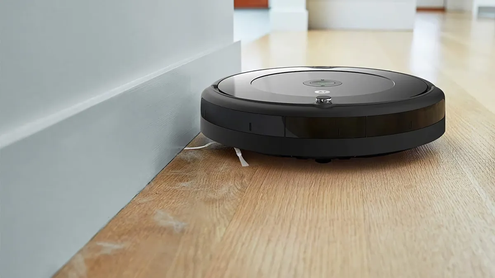
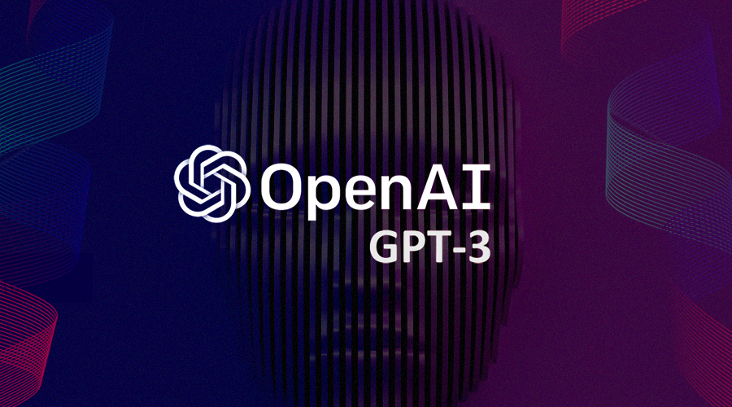
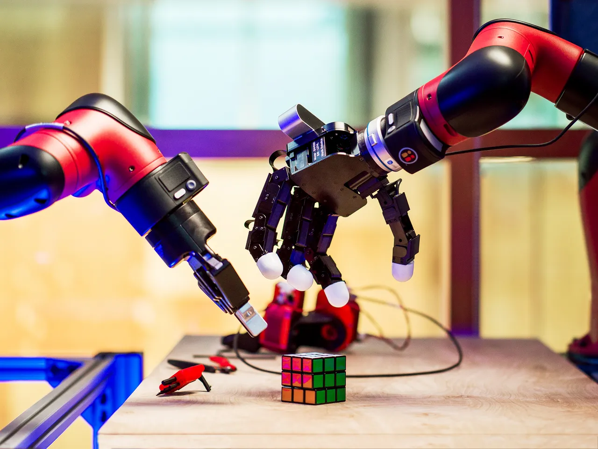

| Intel·ligència | La intel·ligència és la capacitat d'aprendre, comprendre i resoldre problemes. |
| Intel·ligència artificial | La intel·ligència artificial és la inteligència exhibida per màquines. |
| Màquina intel·ligent | Una màquina intel·ligent és un sistema que pot percebre el seu entorn i prendre accions que maximitzen les seves possibilitats d'èxit en un objectiu. |


La prova de Turing és una proposta de test per a la intel·ligència d'una màquina
La va proposar Alan Turing el 1950 en el seu article "Computing Machinery and Intelligence".
L'objectiu de la prova és determinar si una màquina pot pensar.
Un humà, aïllat en una habitació, ha de mantenir una conversa escrita amb dues persones, una humana i una màquina.
Si l'humà no pot distingir entre les dues, la màquina es considera que pensa.

| Poden pensar les màquines?: | _La pregunta de si les màquines poden pensar és massa vaga, i hauria de ser reemplaçada per una altra pregunta que |
| pugui ser contestada per mitjà d'un sí o un no, que tingui una significació precisa._ | |
| Poden les màquines fer el que els humans poden fer?: | Aquesta nova pregunta té l'avantatge que és possible contestar-la definitivament i que molts arguments que s'han fet per contestar la |
| pregunta original poden ser reutilitzats. __ |





| Intel·ligència humana | Intel·ligència computacional | |--|| | Biològica | Computacional | | General | Específica | | Conscient | Inconscient | | Emocional | Racional | | Adaptativa | Estàtica | | Evolutiva | Dissenyada |


